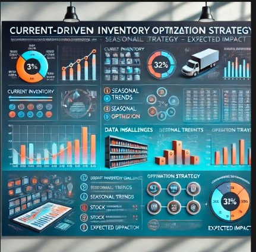

This project focuses on improving the user experience of FlexTrade's shopping app by leveraging Excel for data analysis. By examining user interaction data, purchase behavior, and app performance metrics, we aim to identify trends and insights that will guide enhancements in app design and functionality.
Techtronix Innovations faced challenges with sales strategies, production planning, and market expansion. I analyzed their comprehensive dataset—including sales, customer, and financial data—to optimize sales strategies, improve production efficiency, and identify profitable market opportunities. The project provided actionable insights that helped address these challenges and support strategic decision-making.

The project focuses on optimizing inventory by minimizing overstock and understock, identifying seasonal sales trends, and ensuring key products are always available. It aims to streamline supply chain operations through dynamic reorder points and supplier collaboration. By cutting holding costs and preventing stockouts, the project enhances both cost efficiency and customer satisfaction, preparing the team for next year’s strategy meeting.
DigitalPath Innovations is conducting an A/B test to compare two versions of their webpage, aiming to determine which version performs better in terms of user engagement, conversion rates, and customer satisfaction. The goal is to use data from this test to enhance the website's user experience..

We are in the process of finalizing the dashboard’s design and data integration. Stay tuned for updates as we prepare to showcase the completed project and its impactful results.
We are working on a Customer Data Segmentation and Reporting System using SQL. This project focuses on segmenting customer data to enhance marketing strategies and improve customer relationship management.
We are developing an advanced Sales Forecasting and Analysis Dashboard using SQL. This project aims to improve sales forecasting accuracy and provide detailed sales analysis to support strategic business decisions.